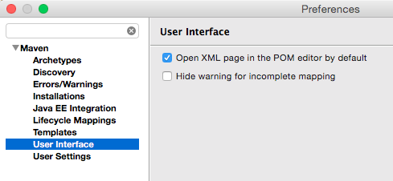
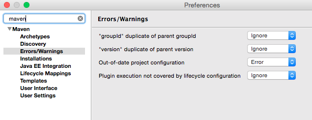

Setting up Eclipse Kepler for use with the Nazgul Framework Codestyle
While Eclipse is a popular IDE, its internal workings are quite different when adapting Maven to the Eclipse. Partly, the solution revolves around integrating Maven using the M2Eclipse tool - and partly in configuring Eclipse not to keep on rebuilding all Maven projects periodically. The latter is quite important since Eclipse otherwise tends to constantly rebuild all Maven projects in a multi-module reactor.
The step-by-step approach below simplifies working with Maven in Nazgul projects.
1. Open pom files as XML by default
Tell Eclipse to open POM files as XML by default, to avoid an annoying click to get into the POM edit mode every time. This is done in the Preferences/Maven/User Interface, as illustrated in the image below

2. Ignore warnings for duplicating parent POM’s groupId and version
The maven-site-plugin performs its variable extrapolation in differently than the “standard” Maven build, which has the effect that variables used in site generation (such as the groupId of a project) are rendered improperly unless explicitly supplied in the POM. Repeating/Copying the groupId of a parent project within the POM of a child project is not an error per se - and to avoid Eclipse removing them, simply switch off the warnings as illustrated in the image below:
